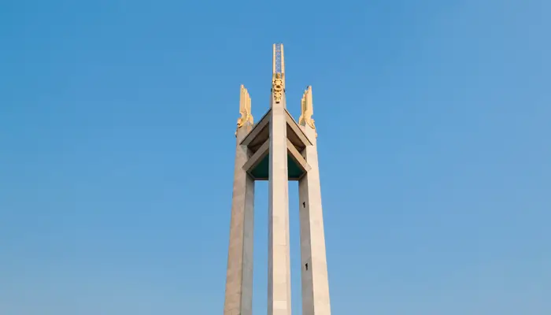
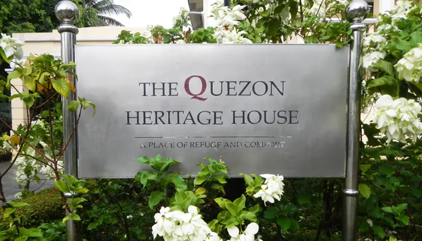
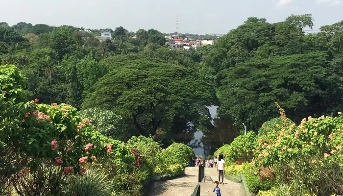
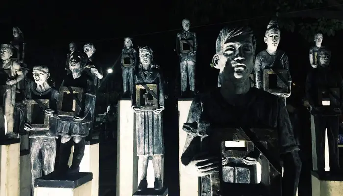
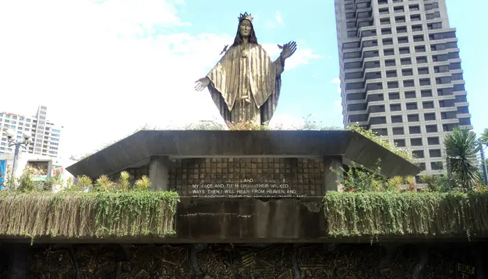
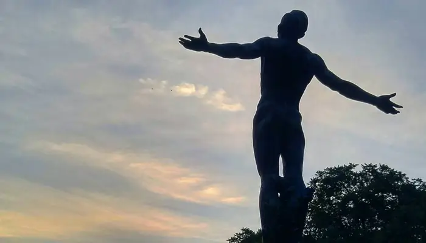
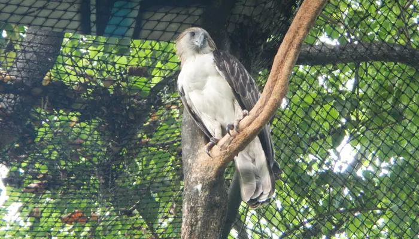
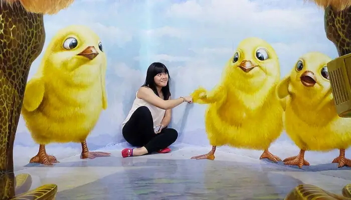
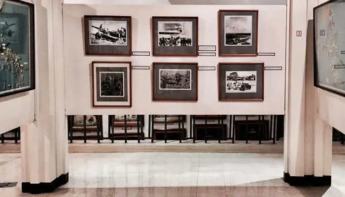
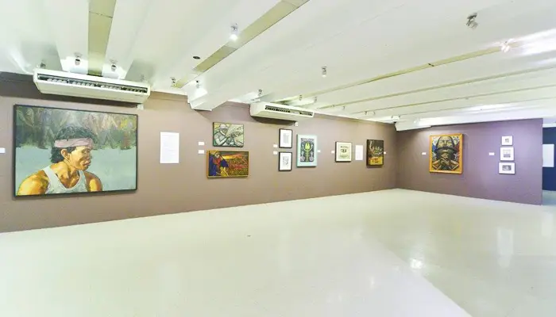

Quezon Memorial Circle
The iconic heart of the city, perfect for biking, picnics, and museums.

The iconic heart of the city, perfect for biking, picnics, and museums.

A restored pre-war home offering a glimpse into President Quezon's life.

A nature reserve and public park. Go swimming, hiking, or just relax by the water.

A monument and museum honoring the heroes who fought during martial law.

A monument dedicated to the People Power Revolution that toppled a dictatorship.

Explore the sprawling campus, home to iconic art, museums, and food stalls.

A rescue and rehabilitation center for animals, set in a lush, green park.

Get inside the art at this massive 3D interactive museum. Perfect for photos!

Explore military history, vintage uniforms, and equipment at this museum.

A premier museum for modern Philippine art, located in the Ateneo de Manila University.